측량기능사 (2002-07-21 기출문제)
1과목: 임의 구분
1. 종단측량에서 각 중심말뚝 사이에 고저의 변화가 있을 때 설치하는 것은?
- 종단 말뚝
- 고저 말뚝
- 횡단 말뚝
- 추가 말뚝
(정답률: 50%)

2. 배횡거에 조정위거를 곱하여 구한 배면적이 -11610.459 m2일 때 면적을 구하면?
- 1451.308m2
- 2902.615m2
- 4353.923m2
- 58⑤.230m2
(정답률: 40%)
3. 정지된 평균해수면을 육지까지 연장한 지구 전체의 가상 곡면을 무엇이라 하는가?
- 지오이드
- 베셀
- 클라크
- 헤이퍼드
(정답률: 91%)
4. 측점 A,B,C가 평판 위에 a,b,c 로 주어졌을 때 이 3점을 시준할 점 D에 평판을 세우고 A,B,C를 시준하여 도면 위의 점 d를 구하는 방법은?
- 전방교회법
- 측방교회법
- 후방교회법
- 전진법
(정답률: 36%)
5. 트래버스 측량결과 위거의 오차는 -0.004m, 경거의 오차는 -0.011m일 때 폐합오차는 얼마인가?(오류 신고가 접수된 문제입니다. 반드시 정답과 해설을 확인하시기 바랍니다.)
- 0.001m
- 0.012m
- 0.117m
- 0.122m
(정답률: 43%)
6. 단열 삼각망은 주로 어느 측량에 적합한가?
- 노선측량, 하천측량, 터널측량에 적합하다.
- 높은 정확도를 필요로 하는 측량에 적합하다.
- 넓은 지역의 측량에 적합하다.
- 기선 삼각망에 적합하다.
(정답률: 64%)
7. 기선 삼각망을 설치할 때에 주의 사항으로 틀린 것은?
- 평탄한 곳이 없을 때 기선의 설정위치는 경사 1/10이하의 지형에 설치
- 1회의 기선 확대는 기선 길이의 3배 이내
- 큰 삼각망에서 기선을 여러번 확대할 때는 기선길이의 10배 이내
- 삼각망이 길게 될 때에는 기선 길이의 20배 정도의 간격으로 검기선 설치
(정답률: 38%)
8. 강철 테이프를 이용하여 경사면을 따라 43m의 거리를 측정하였을 때 고저차는 1.242m이었다. 이 때 경사보정량은 얼마인가?
- -0.014 m
- -0.016 m
- -0.018 m
- -0.024 m
(정답률: 37%)
9. 토털스테이션의 사용상 주의사항이 아닌 것은?
- 이동시에는 기계를 삼각에서 분리시켜 이동한다.
- 기계를 지면에 직접 닿도록 한다.
- 전원 스위치를 내린 후 배터리를 본체로부터 분리한다.
- 커다란 진동이나 충격으로부터 기계를 보호한다.
(정답률: 71%)
10. 1/500 축척 도면을 만들기 위하여 측량을 할 때 제도의 가능한도가 0.2mm이면 실제 측량을 할 때는 몇 cm 까지 줄자의 눈금을 읽으면 되는가?
- 5 cm
- 0.01 cm
- 100 cm
- 10 cm
(정답률: 31%)
11. 트랜싯의 수평각 측정방법 중 아래 그림과 같이 측정하는 방법은?
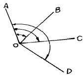
- 방향각법
- 방위각법
- 배각법
- 단각법
(정답률: 71%)
12. 인공위성을 이용한 범세계적 위치 결정의 체계로 정확히 위치를 알고 있는 위성에서 발사한 전파를 수신하여 관측점까지의 소요시간을 측정함으로써 관측점의 3차원 위치를 구하는 측량은?
- GPS측량
- 육분의 측량
- 사진 측량
- 전자파 거리측량
(정답률: 86%)
13. 방위각이 280° 40′ 일 때 방위는?
- N 10° 40′ W
- S 10° 20′ E
- S 100° 40′ W
- N 79° 20′ W
(정답률: 44%)
14. 평판의 세우기 방법 중 잘못하였을 경우 오차에 가장 큰 영향이 있는 것은?
- 수평 맞추기
- 중심 맞추기
- 구심
- 방향 맞추기
(정답률: 64%)
15. 망원경의 정위, 반위로 얻은 값을 평균하여도 소거되지 않는 오차는?
- 시준축 오차
- 연직축 오차
- 수평축 오차
- 시준선의 편심오차
(정답률: 41%)
16. 가장 간단한 방법으로 단지 두 점 사이의 고저차를 구하는 것이 주목적인 야장 기입 방법은?
- 기고식
- 약도식
- 고차식
- 승강식
(정답률: 60%)
17. 수준측량에서 기계고는 다음 중 어느 것인가?
- 후시 + 지반고
- 전시 + 지반고
- 후시 - 지반고
- 전시 - 지반고
(정답률: 57%)
18. 트래버스 측량에서 위거와 경거의 조정방법 중 각 측량과 거리측량의 정밀도가 대략 같을 때 사용되는 오차 조정방법은?
- 컴퍼스 법칙에 의한 방법
- 트랜싯 법칙에 의한 방법
- 합위거, 합경거에 의한 방법
- 좌표에 의한 방법
(정답률: 22%)
19. 기선 수 B=1, 삼각점 수 P=4, 변 수 L=6, 관측각 수 A=8일 때 총 방정식의 수는?
- 3
- 4
- 5
- 6
(정답률: 42%)
20. 그림과 같은 삼각형 ABC에서 ∠A, ∠B, ∠C 와 거리 a를 알 때 거리 b를 구하는 식은?
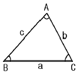
- logb = loga+logsin B-logsin A
- logb = loga-logsin B-logsin A
- logb = loga+logsin B+logsin A
- logb = loga-logsin B+logsin A
(정답률: 60%)
2과목: 임의 구분
21. 평판의 구심오차를 10cm, 도상 허용오차를 0.2mm로 할 때 구심오차를 무시할 수 있는 축척은?
- 1/100
- 1/ 500
- 1/1000
- 1/1200
(정답률: 16%)
22. 단순히 그 점의 표고만을 구하고자 표척을 세워 전시를 취하는 점을 무엇이라 하는가?
- 기계고
- 지반고
- 이기점
- 중간점
(정답률: 52%)
23. 폐합트래버스에서 외각을 측정했을 때 외각의 합을 구하는 식으로 옳은 것은? (단, n 은 변수임)
- 180° (n-2)
- 90° (n+2)
- 180° (n+2)
- 270° (n-2)
(정답률: 57%)
24. 측점이 9개인 폐합 트래버스의 내각의 합을 측정한 결과 1258° 56'40" 이었을 때 측각 오차는?
- 0° 01'40"
- 1° 03'20"
- 2° 03'20"
- 3° 07'20"
(정답률: 52%)
25. 주로 기계적 원인에 의해 일정하게 발생하며 측정 횟수가 증가함에 따라 오차가 누적되고 원인과 상태를 알면 일정한 법칙에 따라 보정할 수 있는 오차는?
- 우연오차
- 상차
- 착오
- 정오차
(정답률: 56%)
26. 앨리데이드 양시준판의 간격이 27cm일 때 시준판 30 눈금의 길이는 얼마인가?
- 7.8 cm
- 8.1 cm
- 8.5 cm
- 9.1 cm
(정답률: 33%)
27. A점에 평판을 세우고 B점에 세운 2m의 표척을 앨리데이드로 시준하니 상시준선의 눈금이 6.5, 하시준선의 눈금이 4.0 이었다. 이 때 A, B간의 거리는?
- 40m
- 80m
- 120m
- 160m
(정답률: 42%)
28. 삼각 수준측량에서 대기의 굴절오차와 지구의 곡률오차가 생기는데 이들 관측값은 어떻게 조정하는가?
- 기차와 구차를 낮게 조정한다.
- 기차와 구차를 높게 조정한다.
- 기차는 높게 구차는 낮게 조정한다.
- 기차는 낮게 구차는 높게 조정한다.
(정답률: 19%)
29. 다음 중 교호수준측량에 의해 제거될 수 있는 오차는?
- 빛의 굴절에 의한 오차와 시준오차
- 관측자의 원인에 의한 오차
- 기계오차
- 표척의 연결부 오차
(정답률: 50%)
30. 다음 그림에서 DE측선의 방위는 얼마인가?
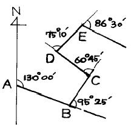
- N 34° 35′ E
- N 26° 10′ W
- S 44° 30′ E
- N 49° 00′ E
(정답률: 32%)
31. 다음은 트래버스 측량에서 선점 및 표지 설치시의 주의 사항이다. 이에 적당하지 않은 것은?
- 시준하기 좋고 지반이 견고한 장소일 것
- 후속되는 측량, 특히 세부측량에 편리할 것
- 측점간의 거리는 가능한 한 비슷하고 고저차가 크지 않을 것
- 측선의 거리는 될 수 있는 대로 짧게 할 것
(정답률: 66%)
32. 평탄지의 트래버스 측량에서 16변인 내각의 관측오차가 1'30"일 때 측각의 처리방법은? (단, 각 측정의 정확도는 같음)
- 재 측량한다.
- 각의 크기에 비례하여 배분한다.
- 각의 크기에 관계없이 등분배한다.
- 변 길이에 비례하여 각각에 배분한다.
(정답률: 30%)
33. 사변형 삼각망에 대한 설명으로 옳은 것은?
- 노선측량 등의 골조측량에 적합하다.
- 넓은 지역의 측량에 적합하다.
- 높은 정밀도를 얻을 수 있고 기선 삼각망 등에 사용된다.
- 측량이 신속하고 경비가 적게 소요되므로 하천측량에 적합하다.
(정답률: 66%)
34. 삼변측량으로 삼각형의 내각을 구하는 방법 중 식이 틀린 것은?
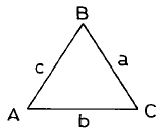
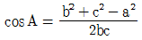
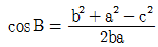
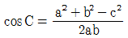
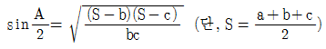
(정답률: 44%)
35. 타원체에 원통을 둘러 씌우고 타원체면을 원통면상에 투영한 후 원통을 펴 보면 투영 평면이 얻어진다. 이는 무엇에 대한 설명인가?
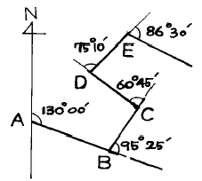
- 평면 직각 좌표계
- 경.위도 좌표계
- UTM 좌표계
- TM 투영법
(정답률: 31%)
36. 단곡선에서 I=60˚, 곡선반경 R=500m일 때 곡선길이는?
- 500.0m
- 729.3m
- 523.5m
- 587.5m
(정답률: 49%)
37. 항공사진 촬영용 사진기 중 초광각사진기의 초점거리에 해당하는 것은?
- 64mm
- 88mm
- 151mm
- 210mm
(정답률: 28%)
38. 스타디아 측량을 할 때 표척이 기울어 졌다면 이 때 발생하는 오차는?
- 승정수 값이 틀리게 된다.
- 가정수 값이 틀리게 된다.
- 오차가 발생하지 않는다.
- 거리와 높이가 틀리게 된다.
(정답률: 60%)
39. 스타디아측량에서 ℓ =0.90m, α =8° 30', K=100, C=0.5 일 때 고저차는? (단, ℓ =협장, α =연직각, K=승정수, C=가정수)
- 13.47m
- 13.23m
- 13.14m
- 13.08m
(정답률: 25%)
40. 심프슨 제 2법칙을 이용하여 면적을 구한 값은? (단, 단위는 m 임)
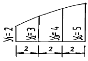
- 12 m2
- 18 m2
- 21 m2
- 28 m2
(정답률: 48%)
3과목: 임의 구분
41. 화면의 크기가 23 × 23cm이고 주점기선의 길이가 89.7mm일 때 사진의 종중복도는?
- 39%
- 59%
- 61%
- 69%
(정답률: 31%)
42. 스타디아 측량에서 발생한 오차 중 고저 계산에 가장 큰 영향을 주는 것은?
- 연직각 측정에 1'의 오차가 있었다.
- 기계고에 1cm 의 오차가 있었다.
- 협장 읽기에 1cm 의 오차가 있었다.
- 가정수 C 의 값에 1cm 의 오차가 있었다.
(정답률: 22%)
43. 다음 삼각형의 면적을 구하는 공식으로 옳지 않은 것은? (단, s =1/2(a+b+c) 임)
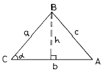
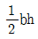
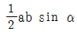
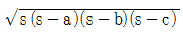
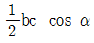
(정답률: 35%)
44. 다음 중 등고선의 간접측정법에 해당되지 않는 것은?
- 지거측정법
- 정방형 분할측정법
- 종단점법
- 횡단점법
(정답률: 31%)
45. 그림과 같은 모양으로 토지를 분할하여 각 교점의 지반고를 측정하였을 때 기준면 위의 체적은? (단, 각 분할단면의 크기는 같음)
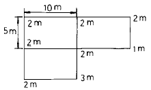
- 125m3
- 180m3
- 300m3
- 450m3
(정답률: 50%)
46. 곡선부를 주행하는 자동차의 뒷바퀴는 앞바퀴보다 항상 안쪽을 지나게 되므로 곡선부에서는 직선부보다 넓은 도로 폭이 필요한데 이 때 넓히는 것을 무엇이라 하는가?
- 고도
- 편거
- 슬랙
- 확폭
(정답률: 38%)
47. 기점으로 부터 교점까지의 추가거리가 650.45m 이고 교각 I = 24° 40′ , 반지름 R = 200m, 중심말뚝 간격이 20m 일 때 접선길이는 얼마인가?
- 40.624m
- 43.729m
- 43.242m
- 90.444m
(정답률: 26%)
48. 표정점을 결정할 때 유의해야 할 사항이다. 가장 관계가 먼 항목은?
- 사진상 확실히 보일 수 있는 점일 것
- 위치나 높이가 정확히 측정될 수 있는 점일 것
- 공중에서 잘 보일 수 있도록 평탄한 곳에 설치할 것
- 규모가 큰 건물 위나 콘크리트구조물 위에 설치할 것
(정답률: 57%)
49. 지형측량의 순서로 옳은 것은?
- 측량계획 작성 - 세부측량 - 골조측량 - 측량원도 작성
- 측량계획 작성 - 측량원도 작성 - 골조측량 - 세부측량
- 측량계획 작성 - 측량원도 작성 - 세부측량 - 골조측량
- 측량계획 작성 - 골조측량 - 세부측량 - 측량원도 작성
(정답률: 69%)
50. 지표의 표고를 숫자로 도상에 나타내는 방법으로 하천, 항만, 호수의 수심을 나타내는 경우에 주로 사용되는 지형 표시법은?
- 우모법
- 음영법
- 점고법
- 등고선법
(정답률: 64%)
51. 다음 중 건설교통부장관이 실시할 측량기술의 연구개발 등의 시책이 아닌 것은?
- 우주측지기술의 도입, 활용
- 정밀측량기기의 제작 보급
- 수치지형정보의 표준화
- 지도제작기술의 개발 및 자동화
(정답률: 35%)
52. 측량용역을 측량업자에게 도급주는 자를 무엇이라 하는가?
- 발주자
- 측량업자
- 도급업자
- 수급인
(정답률: 38%)
53. 국립지리원장은 도시인 경우 몇 년을 기준으로 지도를 수정하여야 하는가?
- 2년
- 3년
- 5년
- 7년
(정답률: 21%)
54. 공공측량으로 지정할 수 있는 일반측량에 대한 설명으로 틀린 것은?
- 측량실시 지역의 면적이 1제곱킬로미터 이상인 삼각 측량
- 측량노선의 길이 5킬로미터 이상인 수준측량
- 국립지리원장이 발행하는 지도의 축척과 동일한 축척의 지도제작
- 촬영지역의 면적이 1제곱킬로미터 이상인 측량용 사진의 촬영
(정답률: 37%)
55. 대한민국 경위도 원점이 있는 곳은?
- 인천시 용현동
- 서울 광화문
- 서울 휘경동
- 수원시 원천동
(정답률: 45%)
56. 다음 사항 중 측량업의 종류에 속하지 않는 것은?
- 측지측량업
- 항공사진촬영업
- 수치지도제작업
- 항공사진제작업
(정답률: 52%)
57. 측량심의회의 위원수는 최대 몇 명 이내인가?
- 15인 이내
- 10인 이내
- 7인 이내
- 20인 이내
(정답률: 28%)
58. 다음 중 2년 이하의 징역 또는 500만원 이하의 벌금에 해당되지 않는 사항은?
- 기본측량을 위하여 설치한 측량표를 이전 손상 기타 그 효용을 해하는 행위를 한 자
- 측량성과를 고의로 사실과 상이하게 한 자
- 부정한 방법으로 측량업의 등록을 한 자
- 측량업의 등록증을 대여한 자
(정답률: 29%)
59. 하루 중 수평각은 언제 관측하는 것이 이상적인가?
- 일출, 일몰 전후
- 정오 전후
- 하루중 언제나
- 야간
(정답률: 36%)
60. 기본측량의 실시공고는 누가 하는가?
- 측량작업기관
- 건설교통부장관
- 국립지리원장
- 관계도지사
(정답률: 22%)